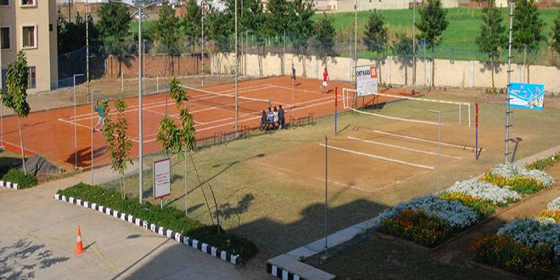

3rd STATE LEVEL INTER-ENGINEERING COLLEGES SPORTS’ FEST-2013
Covering events Volley Ball (Men and Women) , Basket Ball ( Men and Women), Throw Ball (Women), Table Tennis (Men and Women) and Chess (Men and Women) was held on 13th and 14th September, 2013. The Opening Ceremony was held on 13th September, 2013 at 11 a.m.. Chief Guest of the Inaugural Function was Padmashri S. M. Arif garu, Dronacharya awardee, National Badminton Coach. The Guest of Honour was Dr. P. Surendra Reddy, Professor and Head, Department of Physical Education, Osmania University. More than 100 teams registered for various events. The campus looked colourful and bright with players sporting different coloured sports wear. More than 1000 students turned up on the first day. Festivity was visible all over. It went on from morning to evening on both the days. Two days of festivity came to an end with the closing ceremony on 14th September at 5.30 p.m. The Chief Guest of the Valedictory was Shri G. Kiran Reddy garu International Volley Ball player, PRO, APSRTC. Guest of Honour was Dr. N. S. Dileep, Professor of Physical Education, Secretary, Sports Council, JNTUH. Time just passed by these two days. Cheering and clapping marked the Prize Distribution Ceremony. Ecstasy reached its peak with the bursting of crackers at the end of the programme. The Organizing secretary, Mr. J. Ramesh Babu, Principal Dr. A. Padmaja, Senior Administrative Officer, Mr. R. Venkata Chalam expressed great happiness over the stupendous success of the Sports Fest. Dr. P. Rajeshwar Reddy garu, Correspondent, VJIT was present all through watching all the events and enjoying the matches. He too was jubilant over the wonderful outcome.
Cheerssssssssss to VJIT ‘Hip Hip Hurrah!’ ‘Hip Hip Hurrahhhhhhhhhhhh’!
